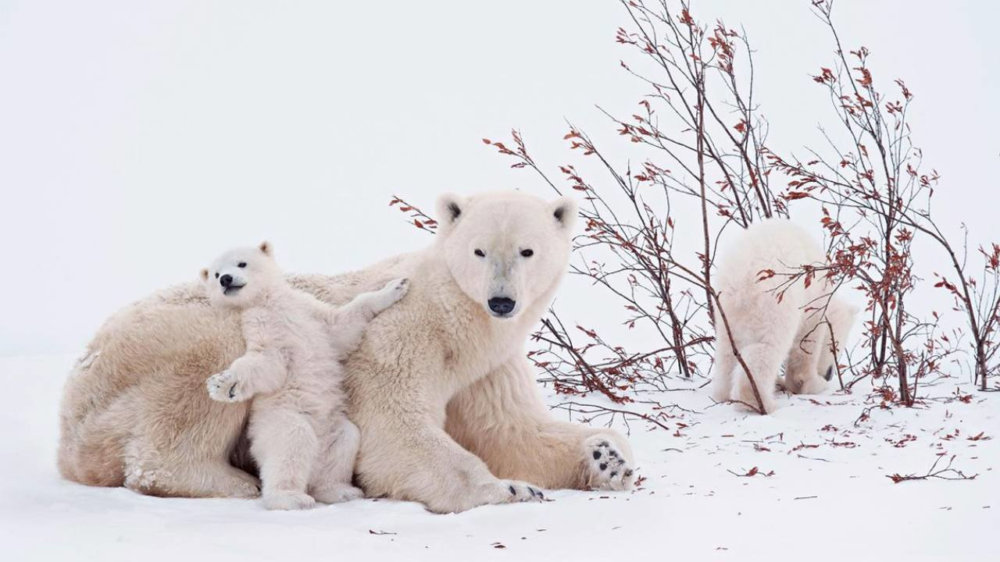
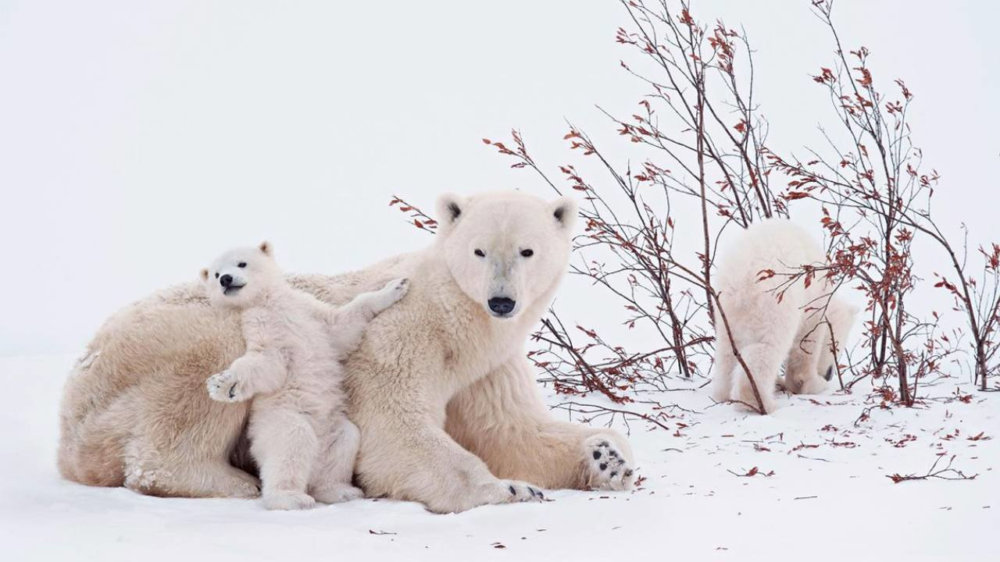

El oso Blanco o Polar
El oso polar u oso blanco (Ursus maritimus) es una especie de mamífero carnívoro de la familia de los osos (Ursidae). Es junto con su pariente, el oso Kodiak (Ursus arctos middendorffi), uno de los carnívoros terrestres más grandes de la Tierra. Vive en el medio polar y zonas heladas del hemisferio norte. Es el único superdepredador del Ártico.
 

¿Cuáles son las especies animales en riesgo de extinguirse? Según muchos rankings que indican qué animales están en mayor peligro de extinción, entre las principales especies en peligro de extinción, encontramos al oso polar u oso blanco. Este tipo de mamífero es una de las especies más amenazadas de la Tierra, y algunos no les pronostican más de un siglo de vida. La razón principal del peligro que corren los osos polares (Ursus maritimus) es el deshielo del Ártico o Polo Norte, su hábitat natural. Se calcula que existen solamente algo más de 20.000 ejemplares.
El oso polar está en peligro de extinción, ya hace tiempo que los expertos vienen alertando de la problemática a la que se enfrenta a esta especie, pero no fue hasta 2008 cuando Estados Unidos decidió incluir al oso polar u oso blanco en su lista de animales en peligro de extinción. Según fuentes del país norteamericano, el cambio climático está destruyendo su hábitat en el Océano Ártico y con ello reduciendo el número de especies en nuestro planeta a pasos agigantados. En el siguiente artículo de EcologíaVerde te hablaremos sobre por qué el oso polar esté en peligro de extinción, así como de algunas acciones para poder ayudarlos y evitar su desaparición.
¿Cuántos osos polares quedan en el mundo?
Científicos del Gobierno de Estados Unidos piensan que dentro de 50 años se extinguirán dos terceras partes de la actual población de osos polares. La decisión se esperaba desde enero, pero el Departamento de Interior dijo que necesitaba más tiempo para estudiar algunas propuestas de miembros del Congreso y de los ecologistas. A todo el mundo no le ha parecido correcta esta medida. Varios expertos en políticas medioambientales del Heartland Institute, han tachado esta decisión de "alarmista" porque "aunque las temperaturas han aumentado en los últimos 10.000 años los osos polares no han desaparecido".
Los osos polares miden entre 2 y 3 metros de longitud y pueden llegar a pesar hasta 700 kilos dependiendo de su edad. Según los datos de WWF, solo quedan unos 20.000 osos polares en el mundo, de modo que convierte a los osos polares en una especie que puede desaparecer en el próximo siglo si continúa la tendencia actual de calentamiento en el Ártico. La mayoría de estos ejemplares viven al oeste de Alaska, el norte de Alaska, Groenlandia, Canadá y Siberia, aunque no se descarta que también tengan presencia en Islandia. A pesar de que puede parecer que están lejos de la contaminación de las ciudades y la civilización, se encuentran en claro peligro de desaparecer. Una triste noticia por todos los que amamos estos y otros tantos animales que no hacen otra cosa que intentar ser felices allá donde se encuentran.
¿Por qué el oso polar está en peligro de extinción?
Entre las principales causas y amenazas que explican que los osos polares estén en peligro de extinción nos encontramos con la contaminación, las intrusiones humanas en el hábitat del animal, las modificaciones de su ecosistema y el cambio climático, por ejemplo. A continuación, vamos a verlas más detalladamente.
Cambio climático
Estudios recientes demuestran que el cambio climático "seguirá poniendo gravemente en peligro la supervivencia del oso polar en el futuro", dice Inger Andersen, Directora General de la UICN. En efecto, el destino del oso polar es el mismo que el nuestro, puesto que el avance del cambio climático amenaza con llevarlo a la extinción.
Creciente contaminación
La gran contaminación que hay en todo el planeta, así como a los pesticidas que están expuestos. A esto hay que sumar que la grasa de las focas, su principal alimento ya que necesitan comer alrededor de 50 focas al año, está llena de toxinas que acaban en su organismo. Lo que provoca todo esto es que sufran una gran cantidad de abortos, nazcan cachorros con muy poco peso y con un sistema inmunológico muy débil. Es decir, que los osos polares no solo están desapareciendo porque mueren, sino porque les cuesta reproducirse.